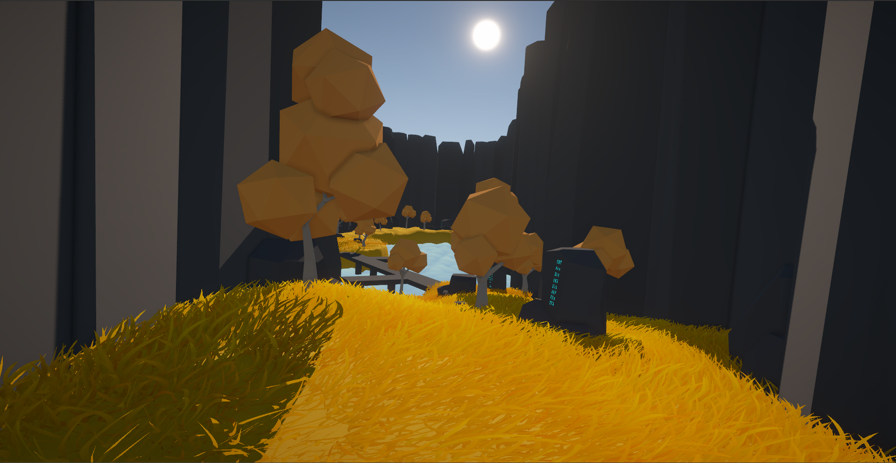
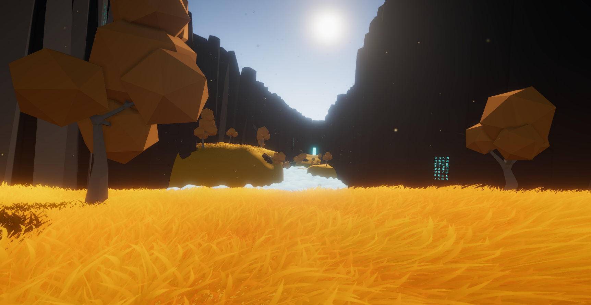
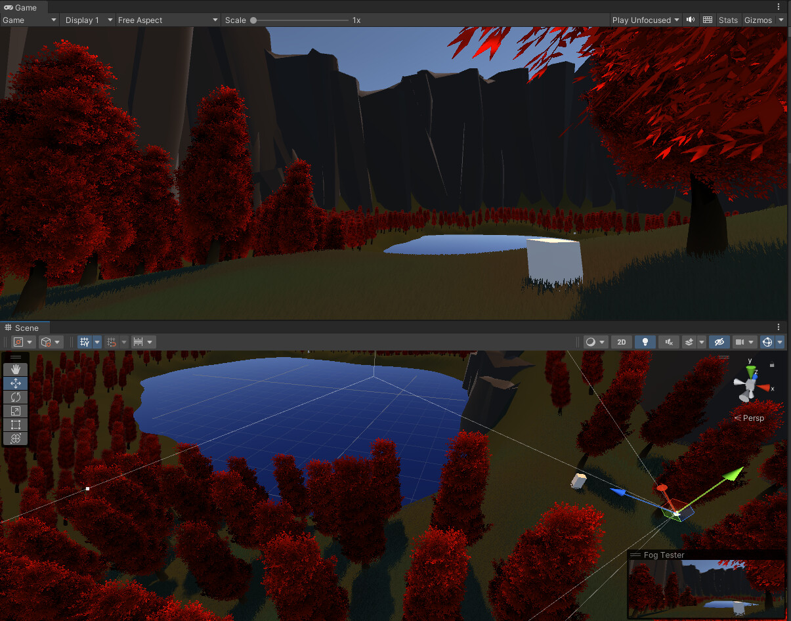
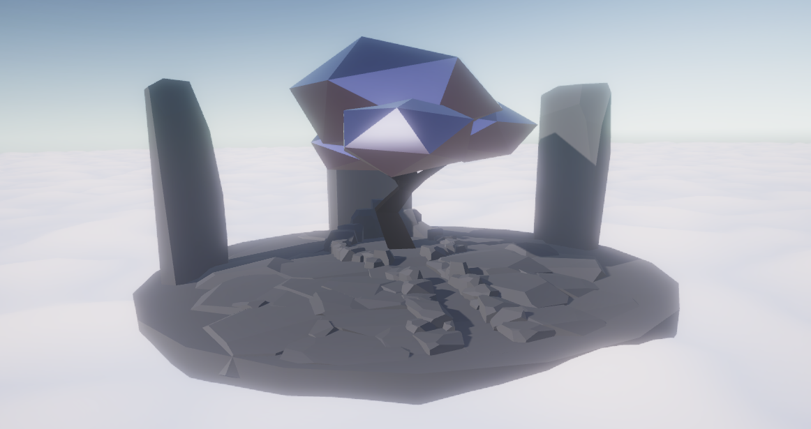
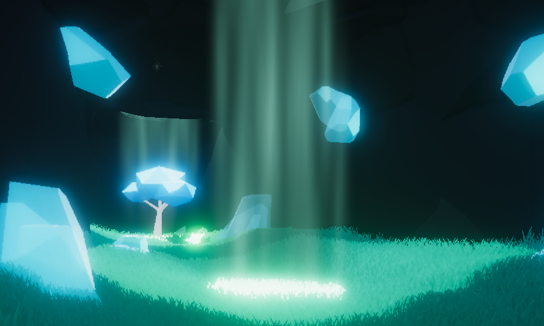

Evan Thiede
Echoes of Gold
I aimed to recreate an experience similar to those I felt playing environmental games. My inspiration drew heavily from Journey, ABZU, and Far: lone sails for their narrative flow.


Liminal spaces were a big draw for my motivation for level design. Echoes of Gold was a project that I wanted to evoke that inspiration in the player. The feeling of being at peace, but also mildy uneasy. The lack of understanding and the sheer solitary nature of environment creates the feeling that you are somewhere that you are not supposed to be, while still being visually striking.



